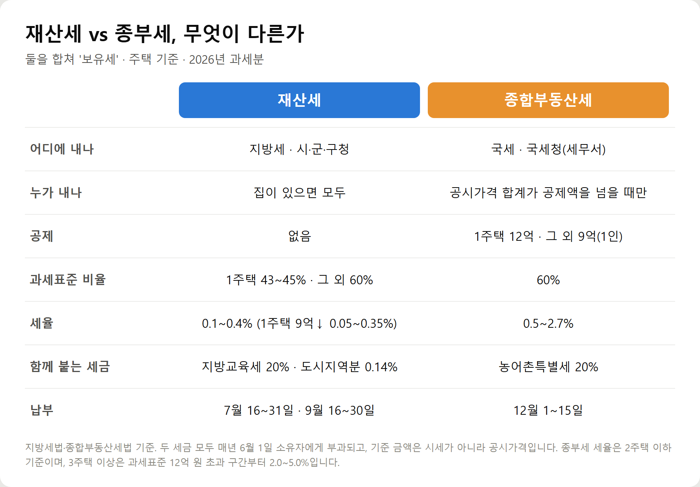
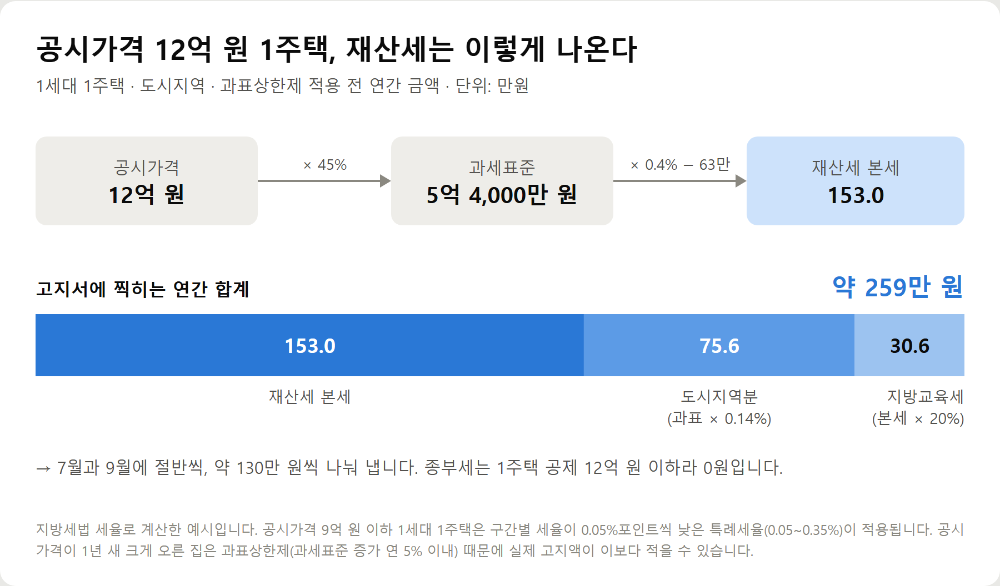
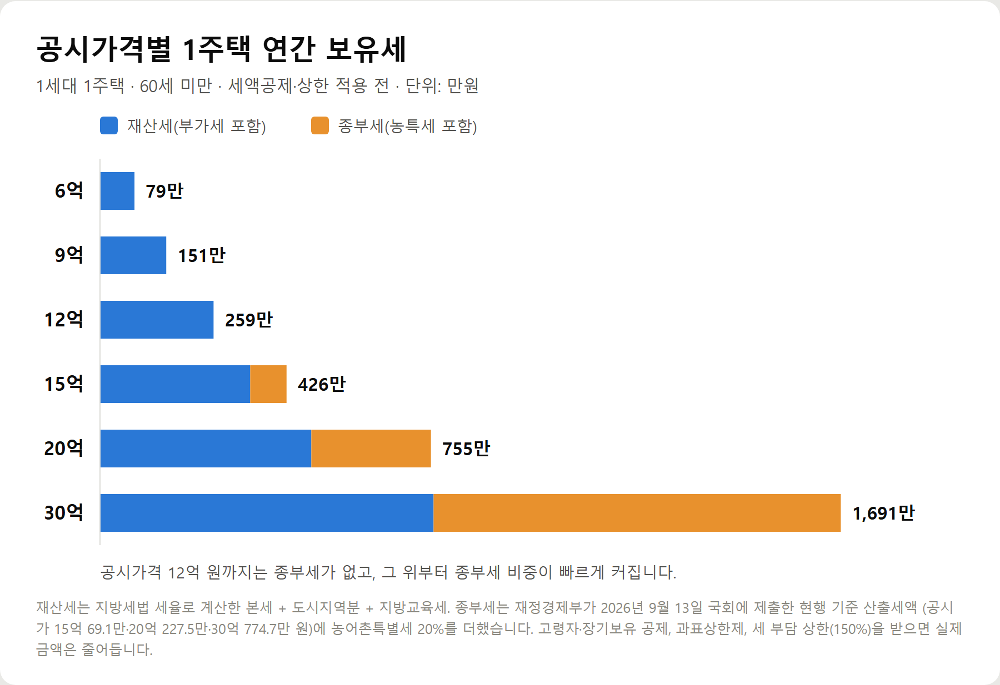
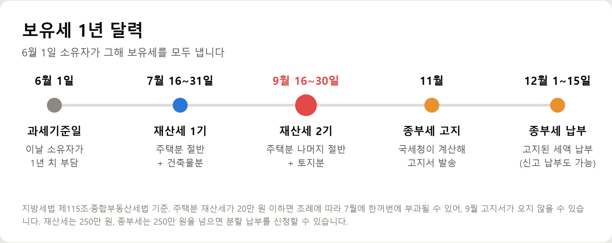

<meta charset="utf-8">
<title>재산세·종부세 차이와 보유세 계산 — 나의 투자 그리고 행복한 여행</title>
<meta name="description" content="재산세와 종부세의 차이, 재산세·종부세 계산 방법, 공시가격별 1세대 1주택 연간 보유세, 고지서 금액이 계산과 다른 이유와 2026년 납부 일정을 정리했습니다.">
<meta name="viewport" content="width=device-width, initial-scale=1">
<link rel="canonical" href="https://worldtraveler1.tistory.com/60">
<link rel="preconnect" href="https://fonts.googleapis.com">
<link rel="preconnect" href="https://fonts.gstatic.com" crossorigin>
<link rel="stylesheet" href="https://fonts.googleapis.com/css2?family=Hahmlet:wght@400;600;800&family=IBM+Plex+Mono:wght@400;500&family=IBM+Plex+Sans+KR:wght@300;400;500;600&display=swap">

<style>
  :root{
    --paper:#F2EEE6;--surface:#FAF8F3;--surface-2:#E7E1D5;
    --ink:#191510;--ink-2:#4A4235;--ink-3:#7D7364;
    --line:#D6CEBF;--line-soft:#E4DDD0;--accent:#B06A15;--accent-bright:#C2761A;
    --up:#E5484D;--down:#3B82F6;
    --f-display:"Hahmlet",'Nanum Myeongjo',"Apple SD Gothic Neo",serif;
    --f-body:"IBM Plex Sans KR","Apple SD Gothic Neo","Malgun Gothic",sans-serif;
    --f-mono:"IBM Plex Mono","SFMono-Regular",Consolas,monospace;
    --pad:clamp(20px,5vw,64px);
  }
  @media (prefers-color-scheme:dark){
    :root:not([data-theme="light"]){
      --paper:#0B1120;--surface:#121A2C;--surface-2:#1A2439;
      --ink:#E9EEF7;--ink-2:#A9B5C9;--ink-3:#72809A;
      --line:#26314A;--line-soft:#1D2739;--accent:#E8A33D;--accent-bright:#F0B45C;
    }
  }
  *{box-sizing:border-box;}
  body{margin:0;background:var(--paper);color:var(--ink);font-family:var(--f-body);
    font-weight:300;font-size:1rem;line-height:1.75;-webkit-font-smoothing:antialiased;}
  a{color:inherit;}
  img{max-width:100%;height:auto;}
  .wrap{max-width:760px;margin:0 auto;padding-inline:var(--pad);}
  .nav{position:sticky;top:0;z-index:20;background:color-mix(in srgb,var(--paper) 88%,transparent);
    backdrop-filter:saturate(180%) blur(12px);border-bottom:1px solid var(--line);}
  .nav-in{display:flex;align-items:center;justify-content:space-between;height:58px;}
  .brand{font-family:var(--f-display);font-weight:600;font-size:1rem;letter-spacing:-.02em;text-decoration:none;}
  .back{font-family:var(--f-mono);font-size:.72rem;color:var(--ink-3);text-decoration:none;}
  .article{padding-block:clamp(40px,7vw,72px) clamp(56px,9vw,96px);}
  .eyebrow{font-family:var(--f-mono);font-size:.68rem;letter-spacing:.16em;text-transform:uppercase;
    color:var(--accent);margin:0 0 14px;}
  h1{font-family:var(--f-display);font-weight:800;font-size:clamp(1.6rem,4.4vw,2.3rem);
    line-height:1.3;letter-spacing:-.03em;margin:0 0 16px;}
  .byline{font-family:var(--f-mono);font-size:.72rem;color:var(--ink-3);
    padding-bottom:24px;border-bottom:1px solid var(--line);margin-bottom:32px;}
  h2{font-family:var(--f-display);font-weight:600;font-size:1.25rem;letter-spacing:-.02em;margin:42px 0 14px;}
  h3{font-family:var(--f-display);font-weight:600;font-size:1.05rem;letter-spacing:-.02em;
    margin:30px 0 10px;padding-top:14px;border-top:1px solid var(--line-soft);}
  h3 .code{font-family:var(--f-mono);font-size:.7rem;font-weight:400;color:var(--ink-3);margin-left:6px;}
  p{margin:0 0 18px;color:var(--ink-2);}
  ul.checks{margin:0 0 18px;padding-left:20px;color:var(--ink-2);}
  ul.checks li{margin-bottom:8px;font-size:.94rem;}
  table{width:100%;border-collapse:collapse;font-size:.88rem;margin-bottom:8px;}
  th{font-family:var(--f-mono);font-size:.66rem;letter-spacing:.06em;text-transform:uppercase;
    color:var(--ink-3);text-align:right;padding:8px 6px;border-bottom:1px solid var(--line);}
  th:first-child{text-align:left;}
  td{padding:10px 6px;border-bottom:1px solid var(--line-soft);color:var(--ink-2);}
  td.num{font-family:var(--f-mono);text-align:right;font-variant-numeric:tabular-nums;}
  td.up{color:var(--up);} td.down{color:var(--down);}
  .scroll{overflow-x:auto;}
  figure{margin:22px 0;}
  figure img{display:block;border-radius:3px;background:var(--surface-2);}
  figcaption{margin-top:8px;font-family:var(--f-mono);font-size:.68rem;color:var(--ink-3);text-align:center;}
  .note{margin-top:34px;padding:16px 18px;border-left:3px solid var(--accent);
    background:var(--surface);border-radius:0 3px 3px 0;}
  .note p{margin:0;font-size:.85rem;color:var(--ink-3);}
  .foot{border-top:1px solid var(--line);background:var(--surface);padding-block:30px 38px;}
  .foot p{margin:0;font-size:.8rem;color:var(--ink-3);}
</style>

<nav class="nav">
  <div class="wrap nav-in">
    <a class="brand" href="../index.html">나의 투자 그리고 행복한 여행</a>
    <a class="back" href="../index.html#stocks">← 시황으로</a>
  </div>
</nav>

<main class="wrap article">
  <p class="eyebrow">Market</p>
  <h1>재산세·종부세 계산 구조 정리 — 2026년 1주택 공시가격별 보유세 (6억~30억)</h1>
  <p class="byline">부동산 · 2026-09-14 기준</p>

  <p>한 줄 요약: 1세대 1주택 기준 공시가격 12억 원까지는 재산세만 냅니다(12억이면 연 약 259만 원). 그 위부터 종부세가 붙어 공시가격 20억 원이면 보유세가 연 약 755만 원, 30억 원이면 약 1,691만 원입니다(세액공제·상한 적용 전).</p>
  <p>2026년 과세분 지방세법·종합부동산세법 세율로 계산 구조를 정리하고, 2026년 9월 보도된 서울 재산세 자료와 2027년 개편안 논의를 함께 기록했습니다.</p>
  <h2>핵심만 먼저</h2>
  <ul class="checks">
    <li>보유세 = 재산세 + 종부세 — 둘 다 6월 1일 소유자에게 1년 치가 부과됩니다</li>
    <li>재산세 — 집이 있으면 모두 냅니다. 7월과 9월에 절반씩, 2기분 기한은 9월 30일입니다</li>
    <li>종부세 — 공시가격 합계가 1주택 12억 원(그 외 1인 9억 원)을 넘을 때만, 12월 1~15일에 냅니다</li>
    <li>고지서 금액 — 재산세 본세에 도시지역분(과표의 0.14%)과 지방교육세(본세의 20%)가 더해집니다</li>
    <li>공시가격 12억 원 1주택 — 재산세 연 약 259만 원, 종부세 0원(과표상한제 적용 전 계산)</li>
  </ul>
  <h2>1. 재산세와 종부세, 무엇이 다른가</h2>
  <p>두 세금은 공통점이 많습니다. 매년 6월 1일 현재 소유자에게 부과되고, 시세가 아니라 공시가격을 기준으로 계산합니다. 6월 1일 전에 잔금을 치르고 샀다면 산 사람이, 6월 2일 이후에 넘겼다면 판 사람이 그해 보유세를 모두 냅니다.</p>
  <p>다른 점은 누가 걷느냐, 누가 내느냐입니다.</p>
  <figure><figcaption>재산세와 종합부동산세 비교 (2026년 과세분, 주택 기준)</figcaption></figure>
  <ul class="checks">
    <li>재산세 — 지방세입니다. 공제 없이 집이 있으면 누구나 냅니다</li>
    <li>종부세 — 국세입니다. 사람별로 공시가격을 합쳐 공제액을 넘는 부분에만 매깁니다</li>
    <li>겹치는 부분 — 종부세를 계산할 때 같은 금액에 이미 낸 재산세는 빼 줍니다. 같은 부분에 두 번 과세하지 않기 위해서입니다</li>
  </ul>
  <h2>2. 재산세 계산 — 3단계면 끝납니다</h2>
  <p>재산세는 공시가격만 알면 직접 계산할 수 있습니다. 공시가격은 부동산공시가격알리미(realtyprice.kr)에서 주소로 조회합니다.</p>
  <p>① 과세표준 = 공시가격 × 공정시장가액비율. 1세대 1주택은 공시가격 3억 원 이하 43%, 3억~6억 원 44%, 6억 원 초과 45%이고, 다주택자와 법인은 60%입니다.</p>
  <p>② 과세표준에 세율을 곱하고 누진공제를 뺍니다. 괄호 안은 공시가격 9억 원 이하 1세대 1주택에 자동으로 적용되는 특례세율입니다.</p>
  <ul class="checks">
    <li>과세표준 6,000만 원 이하 — 0.1% (0.05%)</li>
    <li>6,000만~1억 5,000만 원 — 0.15% (0.1%), 누진공제 3만 원</li>
    <li>1억 5,000만~3억 원 — 0.25% (0.2%), 누진공제 18만 원</li>
    <li>3억 원 초과 — 0.4% (0.35%), 누진공제 63만 원</li>
  </ul>
  <p>③ 함께 붙는 세금을 더합니다. 도시지역 안의 주택은 도시지역분(과세표준의 0.14%)이, 모든 주택에 지방교육세(재산세 본세의 20%)가 붙습니다.</p>
  <figure><figcaption>공시가격 12억 원 1세대 1주택 재산세 계산 예시 (과표상한제 적용 전, 단위 만원)</figcaption></figure>
  <p>공시가격 12억 원 1주택이면 과세표준 5억 4,000만 원, 본세 153만 원, 도시지역분 75만 6천 원, 지방교육세 30만 6천 원으로 연간 약 259만 원입니다. 7월과 9월에 약 130만 원씩 나눠 냅니다.</p>
  <p>공시가격 9억 원이면 특례세율 덕분에 본세가 약 79만 원, 합계가 약 151만 원입니다. 공시가격은 3억 원 차이인데 재산세는 100만 원 넘게 차이 나는 이유가 여기에 있습니다. 9억 원을 넘으면 특례세율이 빠지기 때문입니다.</p>
  <h2>3. 종부세 계산 — 공제선을 넘는 부분만</h2>
  <p>종부세는 공제선을 넘는 금액에만 매깁니다. 1세대 1주택자는 12억 원, 그 외는 1인당 9억 원을 공시가격 합계에서 뺍니다. 부부 공동명의 1주택은 각자 9억 원씩 18억 원을 공제받거나, 신청하면 1주택자처럼 12억 원 공제와 세액공제를 받을 수 있습니다.</p>
  <p>과세표준 = (공시가격 합계 − 공제액) × 60%. 여기에 2주택 이하 세율을 적용합니다.</p>
  <ul class="checks">
    <li>과세표준 3억 원 이하 0.5% · 3억~6억 원 0.7% · 6억~12억 원 1.0%</li>
    <li>12억~25억 원 1.3% · 25억~50억 원 1.5% · 50억~94억 원 2.0% · 94억 원 초과 2.7%</li>
    <li>3주택 이상은 과세표준 12억 원 초과 구간부터 2.0~5.0%로 높아집니다</li>
  </ul>
  <p>이렇게 나온 세액에서 겹치는 재산세를 빼고, 1세대 1주택자라면 고령자·장기보유 세액공제(합산 최대 80%)를 적용합니다. 마지막으로 종부세의 20%인 농어촌특별세가 더해집니다.</p>
  <p>전년보다 세금이 너무 많이 오르지 않게 하는 장치도 있습니다. 재산세와 종부세를 합친 보유세가 전년의 150%를 넘으면 넘는 부분은 종부세에서 걷지 않습니다.</p>
  <h2>4. 공시가격별 1주택 연간 보유세</h2>
  <p>1세대 1주택, 60세 미만, 세액공제와 상한을 적용하지 않았을 때를 기준으로 공시가격별 연간 보유세를 나란히 놓아 봤습니다.</p>
  <figure><figcaption>공시가격별 1세대 1주택 연간 보유세 (재산세 + 종부세, 세액공제·상한 적용 전)</figcaption></figure>
  <ul class="checks">
    <li>6억 원 — 재산세 약 79만 원, 종부세 0원</li>
    <li>9억 원 — 재산세 약 151만 원, 종부세 0원</li>
    <li>12억 원 — 재산세 약 259만 원, 종부세 0원</li>
    <li>15억 원 — 재산세 약 343만 원 + 종부세 약 83만 원 = 약 426만 원</li>
    <li>20억 원 — 재산세 약 482만 원 + 종부세 약 273만 원 = 약 755만 원</li>
    <li>30억 원 — 재산세 약 761만 원 + 종부세 약 930만 원 = 약 1,691만 원</li>
  </ul>
  <p>재산세는 지방세법 세율로 계산했습니다. 종부세는 재정경제부가 9월 13일 국회에 낸 현행 기준 산출세액(15억 원 69만 1천 원, 20억 원 227만 5천 원, 30억 원 774만 7천 원)에 농어촌특별세 20%를 더한 금액입니다.</p>
  <p>60세 이상이거나 5년 넘게 보유했다면 종부세가 크게 줄어듭니다. 예를 들어 70세·15년 보유면 종부세 산출세액의 80%가 공제됩니다.</p>
  <h2>5. 고지서 금액이 계산과 다른 이유</h2>
  <p>직접 계산한 금액과 고지서가 다르다고 곧바로 잘못된 것은 아닙니다. 흔한 이유는 다섯 가지입니다.</p>
  <ul class="checks">
    <li>과표상한제 — 2024년부터 주택 재산세 과세표준은 전년보다 연 5% 넘게 늘지 않도록 묶여 있습니다. 올해처럼 공시가격이 크게 오른 집은 계산값보다 적게 나올 수 있습니다</li>
    <li>도시지역분 — 도시지역이 아닌 곳의 주택에는 붙지 않습니다</li>
    <li>1주택 판정 — 세대원 중 다른 주택이 있으면 43~45% 비율과 특례세율을 받지 못합니다</li>
    <li>공동명의 — 재산세는 지분만큼 나눠 고지되므로 고지서가 두 장입니다. 합친 금액은 단독명의와 거의 같습니다</li>
    <li>소액 일괄 부과 — 주택분 재산세가 20만 원 이하면 7월에 한꺼번에 부과될 수 있어 9월 고지서가 오지 않을 수 있습니다</li>
  </ul>
  <p>올해 서울 자료를 보면 공시가격 상승의 영향이 뚜렷합니다. 서울시 세무과가 국회에 낸 자료에 따르면 서울 주택분 재산세(부가세 포함)는 3조 8,961억 원으로 1년 새 15.1% 늘었습니다. 공시가격 12억 원 초과 주택의 세액은 42.2% 늘었고, 9억 원 이하 구간은 오히려 10.8% 줄었습니다.</p>
  <h2>6. 납부 일정과 방법</h2>
  <figure><figcaption>보유세 1년 달력 — 재산세 7·9월, 종부세 11월 고지·12월 납부</figcaption></figure>
  <ul class="checks">
    <li>재산세 2기분 — 9월 16일~30일. 주택분 나머지 절반과 토지분이 함께 고지됩니다</li>
    <li>납부 방법 — 위택스, 은행 ATM, 가상계좌, ARS, 카카오페이·네이버페이 등 간편결제 (지자체별로 다를 수 있습니다)</li>
    <li>종부세 — 11월 말 고지, 12월 1일~15일 납부. 홈택스·손택스로 낼 수 있습니다</li>
    <li>분할 납부 — 재산세는 250만 원을 넘으면 3개월 안에, 종부세는 250만 원을 넘으면 6개월 안에 나눠 낼 수 있습니다</li>
    <li>기한을 넘기면 — 납부지연가산세가 붙습니다. 자동이체를 걸어두면 놓칠 일이 줄어듭니다</li>
  </ul>
  <h2>비용·조건 한눈에 보기</h2>
  <ul class="checks">
    <li>재산세 과세표준 비율 — 1세대 1주택 43~45%, 그 외 60%</li>
    <li>재산세 세율 — 0.1~0.4%, 공시가격 9억 원 이하 1세대 1주택 0.05~0.35%</li>
    <li>재산세에 붙는 세금 — 도시지역분 과세표준의 0.14%, 지방교육세 본세의 20%</li>
    <li>종부세 공제 — 1세대 1주택 12억 원, 그 외 1인 9억 원</li>
    <li>종부세 과세표준 비율 — 60%</li>
    <li>종부세 세율 — 2주택 이하 0.5~2.7%, 3주택 이상 최고 5.0%</li>
    <li>종부세에 붙는 세금 — 농어촌특별세 종부세의 20%</li>
    <li>상한 — 재산세 과세표준 연 5% 이내 증가(과표상한제), 보유세 합계 전년의 150%</li>
  </ul>
  <h2>2027년에 달라질 수 있는 것</h2>
  <p>정부가 9월 초 국회에 낸 세제개편안에는 종부세 계산을 바꾸는 내용이 들어 있습니다. 아직 국회 심사 중이라 확정된 것은 아닙니다.</p>
  <ul class="checks">
    <li>실거주 1주택자 기본공제 12억 → 14억 원, 비거주 1주택자는 12억 원 유지</li>
    <li>부부 공동명의 — 실거주는 18억 원 유지, 비거주는 각 6억 원씩 12억 원으로 축소</li>
    <li>종부세 공정시장가액비율 60% → 70% 인상 방안 — 국회에서는 60% 유지 의견도 나옵니다</li>
    <li>보유세 세 부담 상한 — 200%로 올리려던 계획을 철회하고 150% 유지</li>
  </ul>
  <p>재정경제부 추산으로는 정부안이 확정되면 공시가격 30억 원 비거주 1주택자(60세 미만)의 종부세 산출세액이 올해 774만 7천 원에서 내년 1,203만 8천 원으로 늘어납니다. 실거주 여부가 앞으로 보유세를 가르는 핵심이 될 가능성이 큽니다.</p>
  <h2>주의할 점</h2>
  <ul class="checks">
    <li>이 글의 금액은 계산 예시입니다 — 과표상한제, 세 부담 상한, 세액공제, 지자체별 차이가 반영되지 않았습니다</li>
    <li>공시가격은 시세가 아닙니다 — 계산에는 반드시 부동산공시가격알리미에서 조회한 값을 넣습니다</li>
    <li>1주택 판정은 세대 기준입니다 — 본인은 1채라도 같은 세대원이 집을 갖고 있으면 1주택 혜택을 받지 못합니다</li>
    <li>오피스텔·분양권·입주권은 판단이 다릅니다 — 재산세 과세 방식에 따라 주택 수 계산이 달라지니 따로 확인합니다</li>
    <li>고지서가 이상하면 — 재산세는 시·군·구청 세무과, 종부세는 세무서나 국세상담센터(126)에 문의합니다</li>
  </ul>
  <h2>자주 묻는 질문</h2>
  <p>Q. 공시가격 12억 원이면 종부세를 내나요?</p>
  <p>1세대 1주택자라면 내지 않습니다. 공제가 12억 원이라 초과분이 없습니다. 다만 2주택 이상이거나 1주택 판정을 받지 못하면 공제가 9억 원이라 종부세가 나올 수 있습니다.</p>
  <p>Q. 재산세 고지서가 본세보다 훨씬 큰 이유는요?</p>
  <p>도시지역분(과세표준의 0.14%)과 지방교육세(본세의 20%)가 함께 고지되기 때문입니다. 공시가격 9억 원 1주택이면 본세 약 79만 원에 두 세금이 붙어 연 약 151만 원이 됩니다.</p>
  <p>Q. 9월 고지서가 안 왔어요.</p>
  <p>주택분 재산세가 20만 원 이하라 7월에 한꺼번에 부과됐을 수 있습니다. 위택스에서 부과 내역을 조회해 보세요.</p>
  <p>Q. 공동명의로 하면 재산세가 줄어드나요?</p>
  <p>재산세는 집 한 채를 기준으로 계산한 뒤 지분대로 나누므로 거의 줄지 않습니다. 절세 효과가 나는 쪽은 사람별로 공제하는 종부세입니다.</p>
  <p>Q. 6월에 집을 사고팔면 보유세는 누가 내나요?</p>
  <p>6월 1일 현재 소유자가 1년 치를 모두 냅니다. 잔금일이나 등기 접수일 중 빠른 날이 기준이라, 6월 1일에 잔금을 치렀다면 산 사람이 냅니다.</p>
  <p>Q. 공시가격이 너무 높게 매겨진 것 같아요.</p>
  <p>공시가격은 매년 4월 말 결정·공시되며, 한 달 동안 이의신청을 받습니다. 올해 기간은 지났으니 내년 봄 열람 기간에 확인하는 것이 좋습니다.</p>
  <h2>정리하면</h2>
  <p>보유세는 재산세와 종부세를 합친 말입니다. 재산세는 집이 있으면 누구나 7월과 9월에 나눠 내고, 종부세는 공시가격이 공제선(1주택 12억 원)을 넘을 때만 12월에 냅니다.</p>
  <p>재산세는 공시가격 × 43~45%(1주택) → 세율 적용 → 도시지역분·지방교육세 더하기, 이 세 단계면 직접 계산할 수 있습니다. 공시가격 12억 원 1주택이면 연 약 259만 원, 종부세는 0원입니다.</p>
  <p>올해처럼 공시가격이 크게 오른 해에는 과표상한제 덕분에 고지서가 계산보다 적게 나올 수 있습니다. 2기분 재산세는 9월 30일까지 내야 합니다.</p>
  <p>다음 글에서는 12월 종부세 신고·납부 방법과 분할 납부, 고령자 납부유예를 정리하겠습니다.</p>
  <p><b>함께 보면 좋은 글</b> — <a href="https://danielmoon82.github.io/moon/posts/jongbu-couple-2026-09-14.html">부부 공동명의 종부세, 특례 신청할까 말까 (9월 16~30일)</a></p>
  <div class="note"><p>이 글은 지방세법·종합부동산세법과 공개 보도를 바탕으로 한 일반 정보이며 개별 세무 상담을 대신하지 않습니다. 금액은 설명을 위한 계산 예시로, 실제 세액은 위택스·홈택스 고지 내역과 관할 기관에서 확인하세요.</p></div>
  <p>※ 기준 시점: 2026년 과세분 지방세법·종합부동산세법 세율(재산세 1세대 1주택 공정시장가액비율 43~45%, 종부세 60%). 서울 재산세 자료는 2026년 9월 13~14일 헤럴드경제 보도, 종부세 산출세액과 개편안 추산은 2026년 9월 13일 재정경제부 국회 서면답변, 세제개편안 내용은 2026년 9월 2~3일 보도 기준입니다.</p>
</main>

<footer class="foot">
  <div class="wrap"><p>나의 투자 그리고 행복한 여행 · 투자 판단의 참고 자료일 뿐, 매수·매도를 권유하지 않습니다.</p></div>
</footer>
